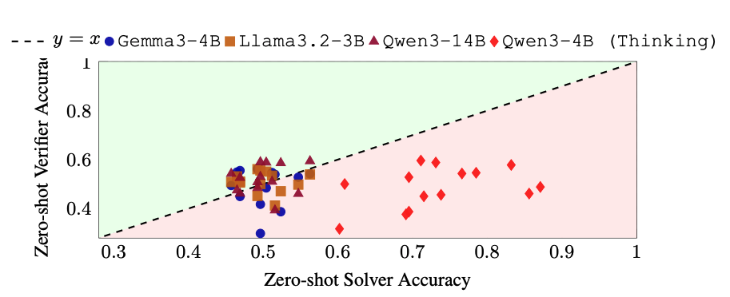
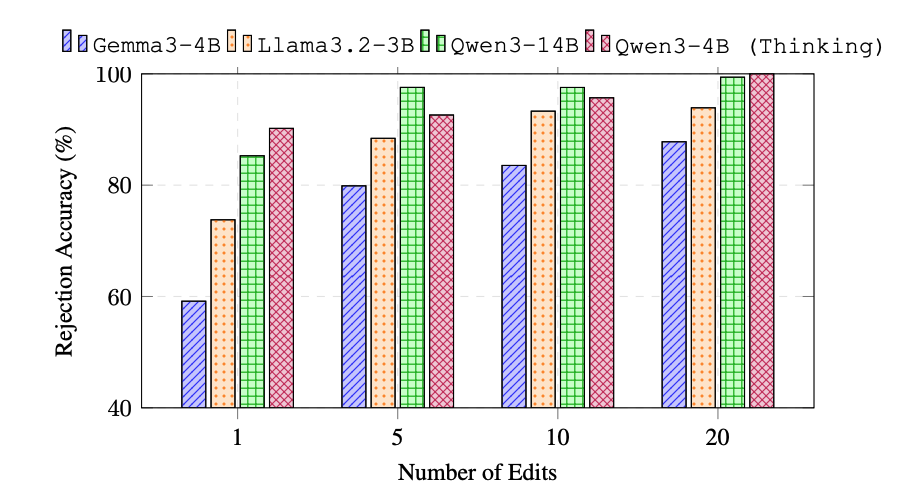
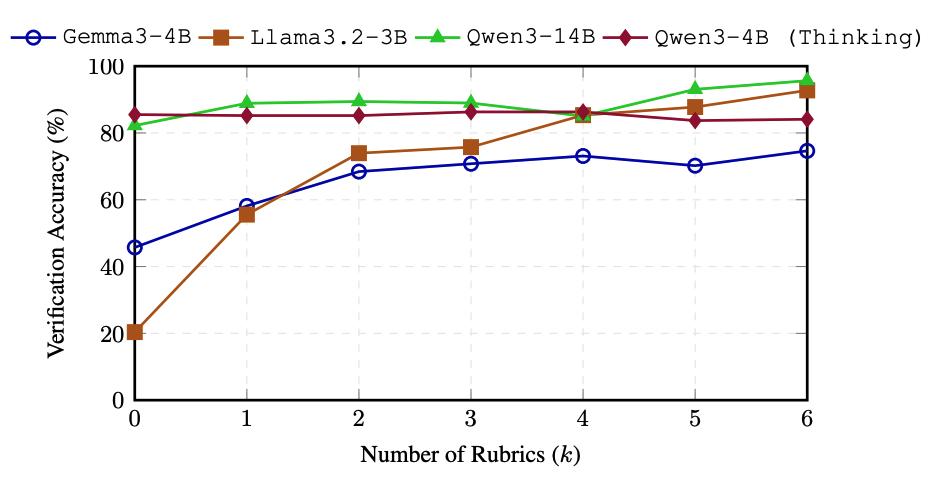
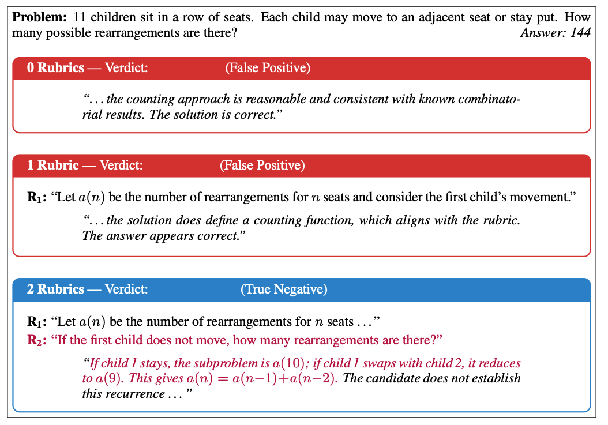

Large language models are increasingly asked to judge the outputs of other models, or even their own. The appeal is obvious: if a model can solve a problem, surely checking a proposed solution should be easier. The ICLR 2026 workshop paper Rethinking LLMs as Verifiers: When Verification Is Harder Than Solving tests that intuition directly, and finds that it often fails.
Across multiple-choice reasoning, program synthesis, and multi-step problem solving, the authors show that verification can be less accurate than solving the same task. That matters wherever model judgments become training signal: RLAIF, self-improvement loops, hallucination detection, and automated benchmarking all depend on the evaluator noticing when a plausible answer is wrong.
The surprising gap between solving and checking
Figure 1 compares zero-shot solver accuracy with zero-shot verifier accuracy across MMLU-Pro subjects. Points below the diagonal are cases where the verifier underperforms the solver. The pattern appears across model families and subjects, which suggests that this is not a narrow benchmark artifact. Verification is a distinct capability, not an automatic by-product of generation.

Three ways a judge can fail
The paper studies verification along three axes. First is epistemic bias: models are better at accepting correct solutions than rejecting incorrect ones. A polished, plausible answer can receive approval even when the underlying reasoning is unsound.
Second is perturbation insensitivity. When a correct solution is changed with a small, localized error, judges often fail to notice. In the paper's program-synthesis experiments, rejection accuracy is low for near-correct candidates and rises only as edits make the error more globally visible.

This is a dangerous failure mode for autonomous loops. If the evaluator rewards a nearly correct but subtly broken artifact, the system can reinforce the exact behavior it was meant to eliminate. Surface similarity becomes a misleading stand-in for semantic correctness.
Structure makes evaluation more reliable
The third axis is rubric conditioning: what happens when the evaluator receives explicit, problem-specific criteria instead of an open-ended instruction to decide whether an answer is correct. Verification accuracy improves as more rubric criteria are supplied across most of the tested models.

Rubrics help in two ways. They decompose a holistic judgment into concrete checks, and they supply information the model may not reliably retrieve or reconstruct on its own. The gains are especially pronounced for smaller models, though stronger models benefit from structure too.

What this means for autonomous training
The practical lesson is not that LLM judges are useless. It is that their verdicts should not be treated as an implicit proxy for truth. Reliable evaluation needs grounded protocols: executable tests, formal checks, simulators, carefully designed rubrics, and benchmarks that deliberately stress localized correctness.
This is closely aligned with Tvashtr's broader direction. We are interested in autonomous research environments where agents generate edge-case tasks, act inside sandboxes, and receive signals from verification mechanisms that are explicit and inspectable. The environment should not merely produce more model outputs; it should produce trustworthy evidence about those outputs and use that evidence to shape the next task.
As models become capable of producing solutions that exceed routine human review, verification becomes part of the frontier. The path to scalable, self-improving training is therefore not a larger judge prompt. It is infrastructure that makes correctness observable.